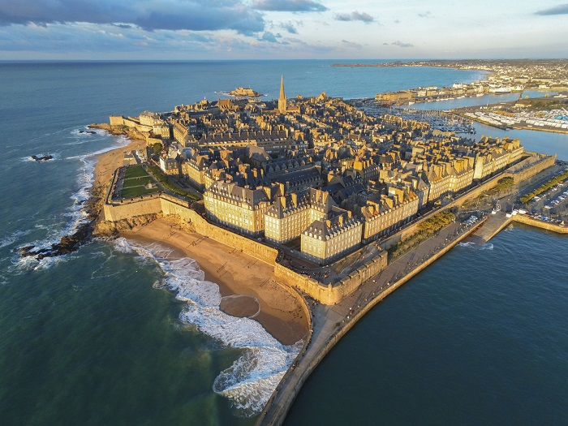
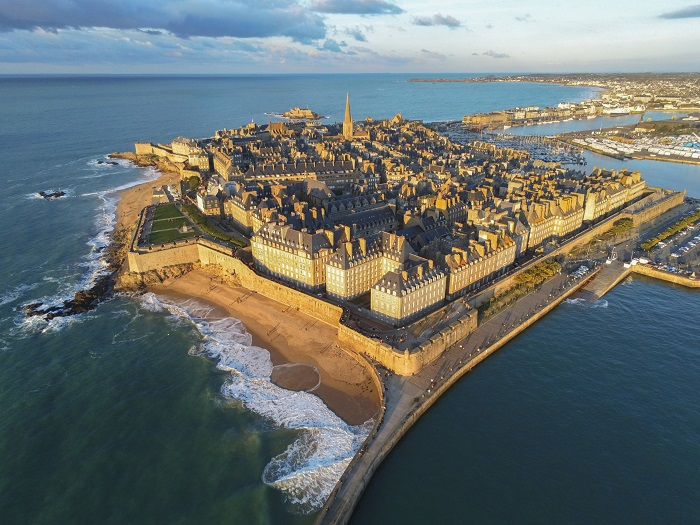
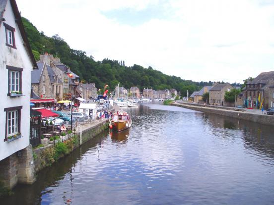
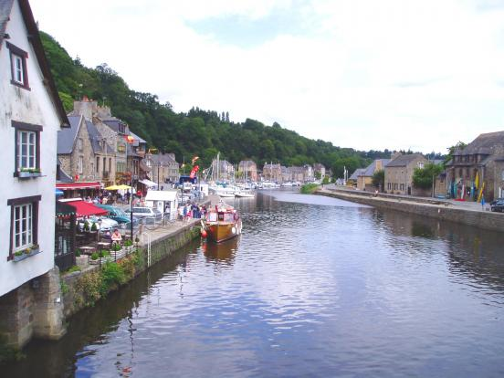

Bienvenue, sur l'association pour les randonneurs, ou simplement des personnes qui aime se promener.
Cette association fondé en début d'année 2022 pour faire découvrir à tous le monde un nouveau paysage juste à côté de chez soi.
L'association est pour l'instant installé en Bretagne et plus précisement dans les Côtes D'Armor, c'est pour cela que toutes les randonnées ou promenades sont localisé à cette endroit.
Le but principale de cette association est de regroupé des personnes qui veulent se rencontrer autour d'une promenade. Mais aussi pouvoir partir en famille et trouver des balades à faire.
Nous vous encourragons à nous envoyer un mail pour que l'ont rajoute de plus en plus de trajet à réaliser et pour que chaque personne puisse faire une balade proche de chez eux.

 

 
